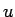
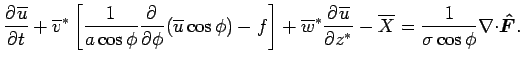

<!DOCTYPE HTML PUBLIC "-//W3C//DTD HTML 3.2 Final//EN">

<!--Converted with jLaTeX2HTML 2K.1beta (1.48) JA patch-1.4
patched version by:  Kenshi Muto, Debian Project.
LaTeX2HTML 2K.1beta (1.48),
original version by:  Nikos Drakos, CBLU, University of Leeds
* revised and updated by:  Marcus Hennecke, Ross Moore, Herb Swan
* with significant contributions from:
  Jens Lippmann, Marek Rouchal, Martin Wilck and others -->
<HTML>
<HEAD>
<TITLE>$BJ?6QEl@>N.$N<0(B</TITLE>
<META NAME="description" CONTENT="$BJ?6QEl@>N.$N<0(B">
<META NAME="keywords" CONTENT="document">
<META NAME="resource-type" CONTENT="document">
<META NAME="distribution" CONTENT="global">

<META HTTP-EQUIV="Content-Type" CONTENT="text/html; charset=iso-2022-jp">
<META NAME="Generator" CONTENT="jLaTeX2HTML v2K.1beta JA patch-1.4">
<META HTTP-EQUIV="Content-Style-Type" CONTENT="text/css">

<LINK REL="STYLESHEET" HREF="document.css">

<LINK REL="next" HREF="node8.html">
<LINK REL="previous" HREF="node6.html">
<LINK REL="up" HREF="node3.html">
<LINK REL="next" HREF="node8.html">
</HEAD>

<BODY >
<!--Navigation Panel-->
<A NAME="tex2html123"
  HREF="node8.html">
</A> 
<A NAME="tex2html119"
  HREF="node3.html">
</A> 
<A NAME="tex2html113"
  HREF="node6.html">
</A> 
<A NAME="tex2html121"
  HREF="node1.html">
</A>  
<BR>
<B> :</B> <A NAME="tex2html124"
  HREF="node8.html">$B;R8aLL>e$NH/;61i;;;R(B</A>
<B> :</B> <A NAME="tex2html120"
  HREF="node3.html">NumRu::GPhys::EP_Flux $B$G7W;;$5$l$k=oNL(B</A>
<B> :</B> <A NAME="tex2html114"
  HREF="node6.html">$B;D:9=[4D(B</A>
 &nbsp <B>  <A NAME="tex2html122"
  HREF="node1.html">$BL\<!(B</A></B> 
<BR>
<BR>
<!--End of Navigation Panel-->

<H1><A NAME="SECTION003400000000000000000">
$BJ?6QEl@>N.$N<0(B</A>
</H1>

$B5,3J2=$7$?(B EP $B%U%i%C%/%9$rMQ$$$k$H(B, TEM $B7O$K$*$1$k(B  $B$N<0$O(B
$B0J2<$N$h$&$K$J$k(B.
<BR>
<DIV ALIGN="CENTER"><A NAME="eq:transformed_euler_mean_pe_momentum_x_with_F^"></A><!-- MATH
 \begin{eqnarray}
& &
\DP{\overline{u}}{t}
        + \overline{v}^*\left[\Dinv{a\cos\phi}\DP{}{\phi}(\overline{u}\cos\phi) - f\right]
        + \overline{w}^*\DP{\overline{u}}{z^*}
        - \overline{X} =
        \Dinv{\sigma \cos\phi}\Ddiv\Dvect{\hat{F}}.
\end{eqnarray}
 -->
<TABLE CELLPADDING="0" ALIGN="CENTER" WIDTH="100%">
<TR VALIGN="MIDDLE"><TD NOWRAP ALIGN="RIGHT">&nbsp;</TD>
<TD>&nbsp;</TD>
<TD ALIGN="LEFT" NOWRAP></TD>
<TD WIDTH=10 ALIGN="RIGHT">
(2.8)</TD></TR>
</TABLE></DIV>
<BR CLEAR="ALL"><P></P>
<BR><HR>
<ADDRESS>
Tsukahara Daisuke
$BJ?@.(B17$BG/(B2$B7n(B19$BF|(B
</ADDRESS>
</BODY>
</HTML>
